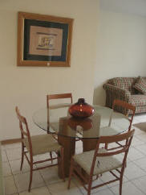
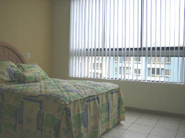

|
|
Caja Municipal de Sullana regala departamento en
Lima
 Un
departamento en la zona residencial más exclusiva de Lima regalará la Caja
Municipal de Sullana el próximo 4 de enero entre sus ahorristas de
depósito a plazo fijo y CTS.
El departamento, ubicado en las Lomas de
la Molina Vieja, se suma a los seis autos que la CMAC Sullana regaló en
todas sus agencias el mes de agosto pasado. Esta es una manera de
incentivar el ahorro, como parte de sus políticas institucionales de
fomento al ahorro y las micro finanzas.
La CMAC Sullana, a través de su Gerente
de Ahorros, Eco. Alfredo León, señala que los ahorristas entrarán al
sorteo automáticamente por cada cien soles o cien dólares de depósito a
Plazo Fijo o a través de sus CTS. “Nuestros ahorristas no solo tienen
la opción de ganarse este departamento; también podrían llevarse otros 32
fabulosos premios, entre computadoras Pentium IV, equipos de sonido, TV
color de 20” con VHS, juegos de playa y mucho más. En nuestras
Agencias de Tumbes, Talara, Sullana, Huacho, Barranca y Huaral se
efectuará el sorteo simultáneamente, como siempre con el marco de un show
artístico para deleite de nuestros clientes y amigos”, añadió Alfredo
León.
El departamento se ubica en una zona
apacible, con extensas áreas verdes, con acabados de primera y consta de
sala de estar, sala, comedor, cocina, dos dormitorios, lavandería, 3 baños
y cochera.
Este sorteo se enmarca también dentro de
las celebraciones de los 16 años que cumple la CMAC Sullana el 19 de
diciembre, como líder en micro finanzas en la zona norte del país.
 |